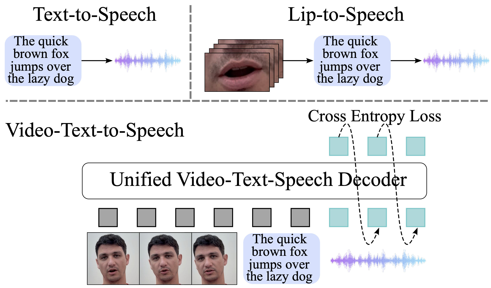
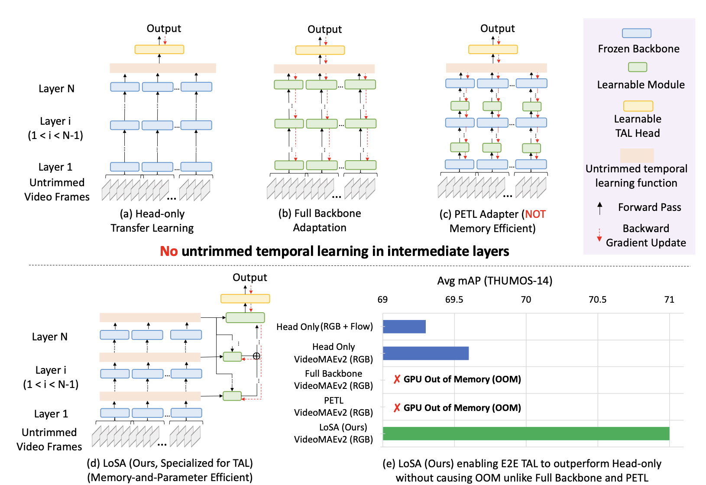
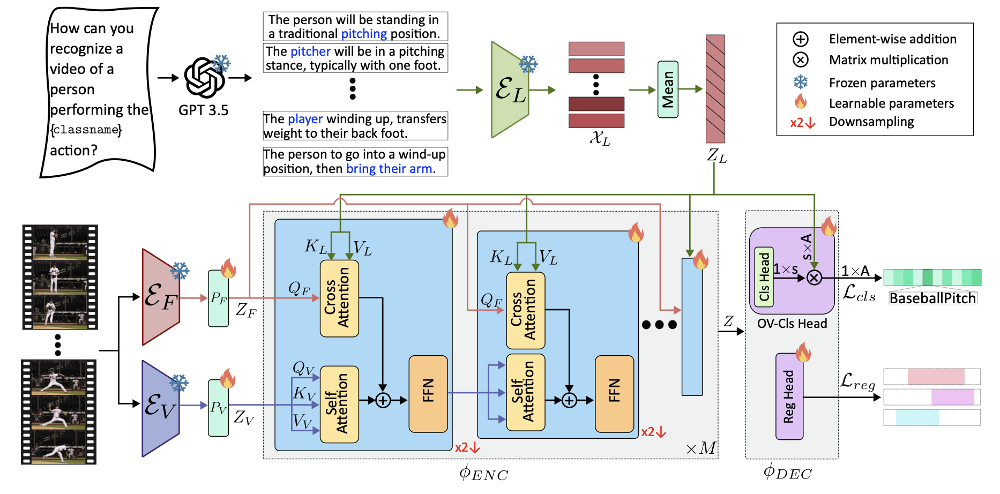
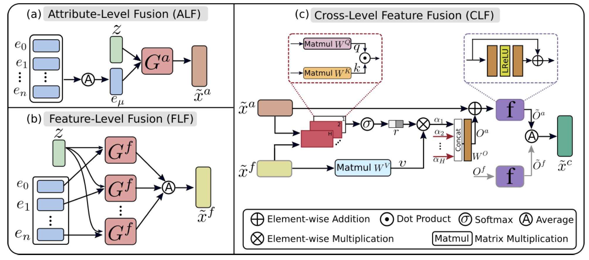
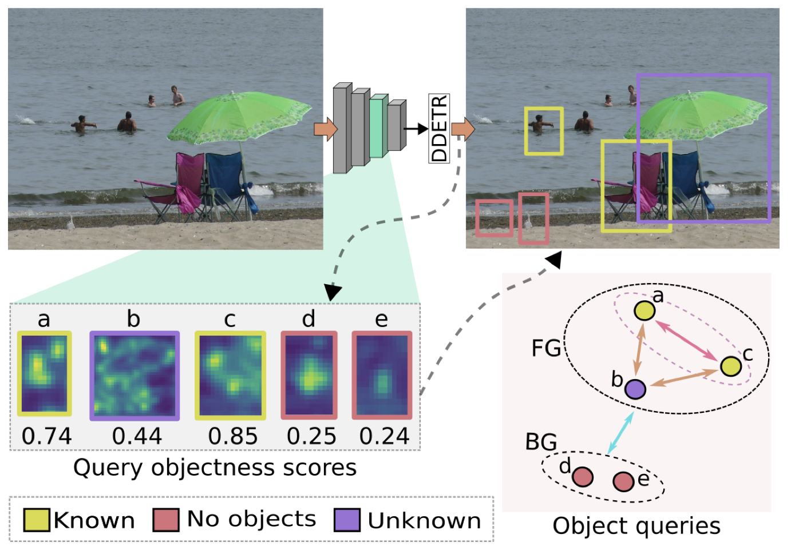

|
I am an ELLIS PhD student at TU Darmstadt, co-supervised by Prof. Marcus Rohrbach and Dr. Federico Tombari at Google Zurich. I completed my MASc at the University of Guelph, where I was advised by Prof. Graham Taylor. During that time, I was also a student researcher at the Vector Institute. I was fortunate to spend time as a research intern at Apple under Dr. Tatiana Likhomanenko, Microsoft under Gaurav Mittal and Mei Chen, Vector Institute under Dr. David Emerson, and as a scientist in residence at NextAI with Prof. Graham Taylor. Before academia, I worked as a Data Scientist at Bayanat , where I focused on projects related to detection and segmentation. Prior to that, I was a Research Engineer at the Inception Institute of Artificial Intelligence (IIAI), working with Dr. Sanath Narayan, Dr. Salman Khan, and Dr. Fahad Shahbaz Khan. Email / Google Scholar / Twitter / Github / Resume/CV |

I'm always open to collaborations or project supervisions! Just drop me a message :) |
2025-Present
2024-2025
2022-2024
2022-2024
2023-2024
2024
2022
2018-2022
What's New ✨
| [Mar 2025] | 🎓 Excited to be an ELLIS PhD student at TU Darmstadt under Prof. Marcus Rohrbach and Dr. Federico Tombari (Google Zurich) 🎉 |
| [Oct 2024] | 🎓 Graduated and Defended my Masters Thesis |
| [Nov 2024] | 📝 Our paper Visatronic: A Multimodal Decoder-Only Model for Speech Synthesis is now on ArXiv! |
| [Jun 2024] | 🍏 Joined Apple as a Research Intern! |
| [May 2024] | 🧠 Serving as a Scientist-in-Residence at NextAI. |
| [Jan 2024] | 🏆 Our paper Long-Short-range Adapter for Scaling End-to-End Temporal Action Localization accepted at WACV 2025 (Oral)! 🎤 |
| [Dec 2023] | 📚 Our work Open-Vocabulary Temporal Action Localization using Multimodal Guidance accepted at BMVC 2024! |
| [Jun 2023] | 🧪 Our paper Generative Multi-Label Zero-Shot Learning accepted at TPAMI 2023. |
| [Jun 2023] | 🚀 Started interning at Microsoft, ROAR team. |
| [Jan 2023] | 🤖 Interned at Vector Institute with AI Engineering team. |
| [Sep 2022] | 🔬 Joined Prof. Graham Taylor's Lab and Vector Institute. |
| [Mar 2022] | 🏅 OW-DETR accepted at CVPR 2022. |
| [Sep 2021] | ✍️ Reviewer for CVPR 2023, CVPR 2022, ECCV 2022, ICCV 2021, TPAMI. |
| [Jul 2021] | 🏅 BiAM accepted at ICCV 2021. |
| [Feb 2021] | ✍️ Serving as a reviewer for ML Reproducibility Challenge 2020. |
| [Jan 2021] | 📝 Paper out on arXiv: Generative Multi-Label Zero-Shot Learning |
| [Jul 2020] | 🏅 TF-VAEGAN accepted at ECCV 2020. |
| [Aug 2019] | 🛰️ A Large-scale Instance Segmentation Dataset for Aerial Images (iSAID) available for download. |
| [Aug 2018] | 🎤 One paper accepted at Interspeech, CHiME Workshop 2018. |
| [May 2018] | 🌟 Selected as an Outreachy intern with Mozilla. |
Conference and Journal Reviewing 📚
CVPR (2022–2025) | ECCV (2022, 2024) | ICCV (2021) | TPAMI (Journal)
Invited Talks 🎤
- [Mar 2025] — Gave a talk at UCF CRCV lab — thank you Prof. Shah for hosting me!
- [Dec 2021] — Computer Vision Talks (YouTube Link)
Research Interests 🔍
I am broadly interested in building scalable, multimodal models that combine vision, language, and speech modalities with interests in efficient modeling, temporal understanding, and open-world generalization.
Publications 📄
|  |
Visatronic: A Multimodal Decoder-Only Model for Speech Synthesis
ArXiv 2025 |
Paper
|
|  |
LoSA: Long-Short-range Adapter for Scaling End-to-End Temporal Action Localization
Akshita Gupta*,
Gaurav Mittal*,
Ahmed Magooda,
Ye Yu,
Graham W. Taylor,
Mei ChenWACV 2025 (Oral) | Arxiv |
|  |
Open-Vocabulary Temporal Action Localization using Multimodal Guidance
Akshita Gupta,
Aditya Arora,
Sanath Narayan,
Salman Khan,
Fahad Shahbaz Khan,
Graham W. TaylorBMVC 2024 | Paper |
|  |
Generative Multi-Label Zero-Shot Learning
Akshita Gupta*,
Sanath Narayan*,
Salman Khan,
Fahad Shahbaz Khan,
Ling Shao,
Joost van de WeijerTPAMI 2023 | Paper |
|  |
OW-DETR: Open-world Detection Transformer
Akshita Gupta*,
Sanath Narayan*,
Joseph KJ,
Salman Khan,
Fahad Shahbaz Khan,
Mubarak ShahCVPR 2022 Paper / Code |

|
Discriminative Region-based Multi-Label Zero-Shot Learning
Sanath Narayan*,
Akshita Gupta*,
Salman Khan,
Fahad Shahbaz Khan,
Ling Shao,
Mubarak ShahICCV 2021 Paper / Code |

|
Latent Embedding Feedback and Discriminative Features for Zero-Shot Classification
Sanath Narayan*,
Akshita Gupta*,
Salman Khan,
Fahad Shahbaz Khan,
Cees G. M. Snoek,
Ling ShaoECCV 2020 Paper / Code |

|
iSAID: A Large-scale Dataset for Instance Segmentation in Aerial Images
Syed Waqas Zamir,
Aditya Arora,
Akshita Gupta,
Salman Khan,
Guolei Sun,
Fahad Shahbaz Khan,
Fan Zhu,
Ling Shao,
Gui-Song Xia,
Xiang BaiCVPR Workshop 2019 (Oral) Code / Dataset |

|
Acoustic Features Fusion Using Attentive Multi-Channel Deep Architecture
Gaurav Bhatt,
Akshita Gupta,
Aditya Arora,
Balasubramanian RamanInterspeech Workshop 2018 | Code |
|
I borrowed this website layout from here! |